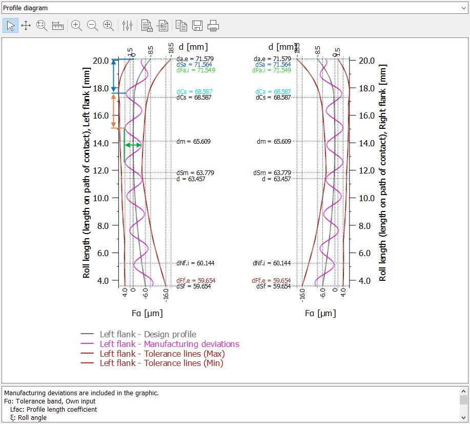

|
|
|


齿廓和齿向线偏差
齿廓或齿向方向的形状偏差可以使用正弦形波纹来设置。双振幅应小于或等于按 ISO、AGMA 或 DIN 标准的相应形状偏差（ffαT 或 ffβT）。您还可以设置波纹长度以及从齿顶或侧面 I 开始的位置。斜率偏差应小于或等于按 ISO、AGMA 或 DIN 标准的相应斜率偏差（fHαT 或 fHβT）。
您可以通过指定形状偏差（双振幅）和额外的斜率偏差来设置总偏差。

图 15.63：齿廓图中显示的齿廓形状偏差的模拟
Profile and flank line deviations
The form deviation in the profile or flank line direction can be set using a sinus-shaped waviness. The double amplitude should be smaller than or equal to the corresponding form deviation according to ISO, AGMA or DIN (ffαT or ffβT). You can also set the waviness length and the start at the tip or side I. The slope deviation should be less than or equal to the corresponding slope deviation according to ISO, AGMA or DIN (fHαT or fHβT).
You can set a total deviation by specifying a form deviation (double amplitude) and an additional slope deviation.
Figure 15.63: Simulation of a profile form deviation shown in the profile diagram